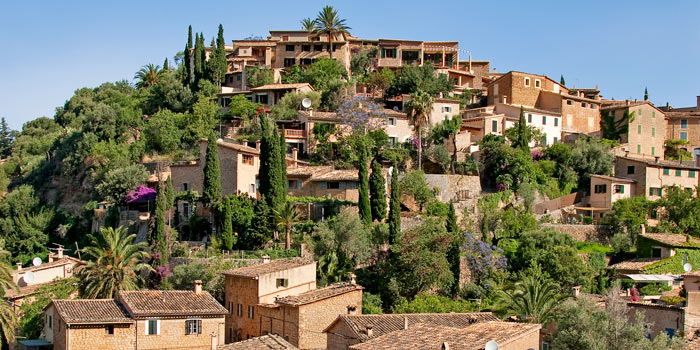

Mallorca is the largest and most densely populated of the four Islands (Mallorca, Menorca, Ibiza and Formentera) which form the Spanish Balearic Islands in the Mediterranean Sea, east of mainland Spain.
A popular tourist destination for many years, the Island is currently voted a top holiday favourite for travellers from Britain, Germany and the Scandinavian Countries of Denmark, Norway and Sweden. Mallorca or Majorca, we know can be a bit confusing.
The locals refer to the Island as 'Mallorca' from the Catalan language frequently spoken. Lessons in schools are mainly taught in this language and it is also the preferred language of government and public services throughout each of the Municipalities.
This is a surprise to many visitors coming to the Island who expect Spanish to be the main language spoken. However prior to the death of Franco in 1975 the island was known locally as 'Majorca' derived from being the largest, (Major) Island of the Balearics. In the English speaking world, especially the United Kingdom, 'Majorca' is still the preference, perhaps this will change over the years.
The immense natural beauty together with Mediterranean weather (hot dry Summers and mild Winters) are the main reason why this Island has been so popular as a holiday destination. Whether you are looking for a relaxing break or a holiday packed full of adventure you will find that the Island has something to offer everyone.
We also enjoy a very diverse landscape from the rocky Tramuntana Mountainous region in the North-West to the flat plains in the centre of the Island. The beautiful beaches, varying resorts and range of sports and tourist activities provide a multitude of options for visitors. This is the reason why so many tourists return to the Island year after year!